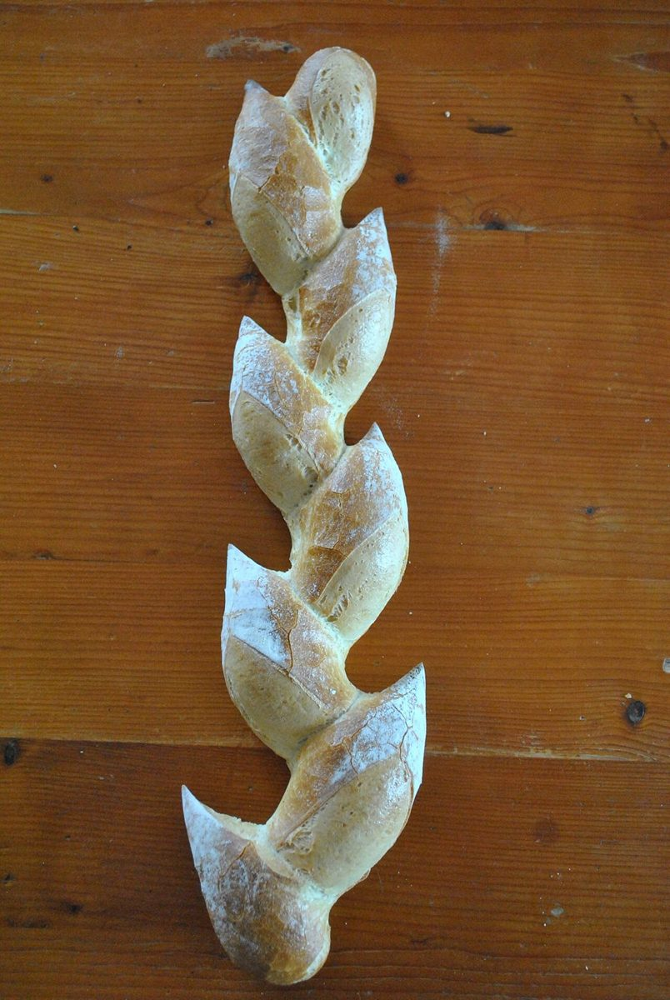

制作側の連想
屋号を「紋」に見立てて
屋号の意味や由来は分かりません。制作側は、お店の名前を、お店が掲げる紋のようなものと連想しました。そこで盾の紋章を二つや四つに分ける「分割」の考え方になぞらえ、五つのページをそれぞれ違う割り方の盾で案内しています。お店の理念・由来とは無関係の、制作側の連想です。
パンまわりのイメージ
粉、穂、細長い生地。
写真は那珂市やお店のものではありません。国外または撮影地不明のフリー素材で、お店で扱っているものを示すものでもありません。



ご案内
お店のこと(確認できたものだけ)
| 所在地 | 〒311-0105 茨城県那珂市菅谷2208-4 |
|---|---|
| 電話 | なし |
| 営業時間 | 準備中 |
| 定休日 | 準備中 |
| ご予約 | 準備中 |
| 駐車場 | 準備中 |
| SNS | Instagram @panyanotera |